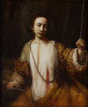
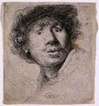

From
the collection

Rembrandt
van Rijn
Lucretia
1666
Oil on canvas
H.43-3/8 x W.36-1/3 in.
The William Hood Dunwoody Fund
Lucretia was painted in the last years of Rembrandt's life and is one
of the masterpieces of this Dutch Baroque artist. Rembrandt's earlier
etchings, had a profound effect on Castiglione. Castiglione greatly
admired the way Rembrandt used line and shading, or chiaroscuro, in
his prints.


Rembrandt
van Rijn
Rembrandt Wearing a
Soft Hat,Cocked, Head Only
1631
Etching
Overall H.5-7/8 x W.5-1/8 in.
The Ladd Collection,
Gift of Herschel V. Jones